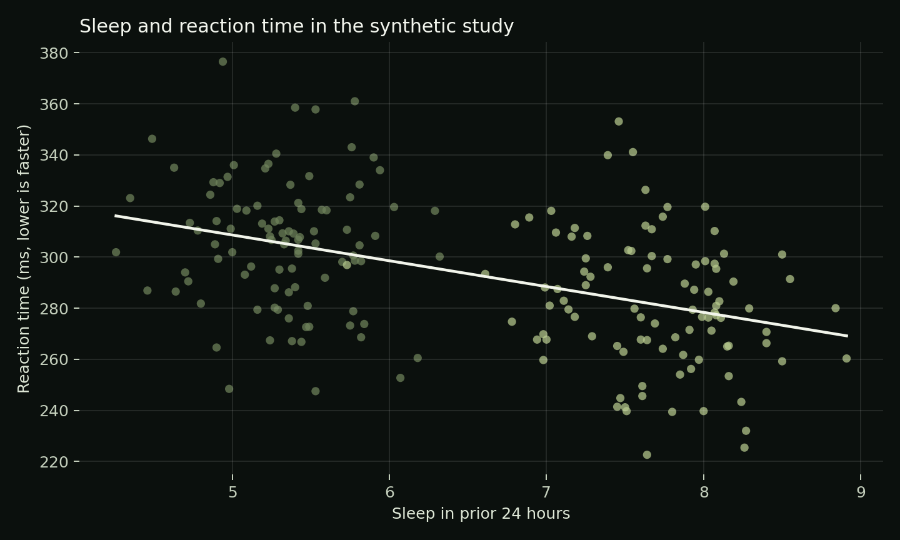

Independent Portfolio Project | Synthetic Dataset
Sleep and performance
in a paired study.
A transparent research analysis using repeated measures, a confidence interval, correlation and simple regression.
96 fictional participants · 192 sessions · Rested and restricted conditions.
The modeled effect is a simulation input, not a real physiological finding.
Research question
Does the paired condition matter?
Reaction time averaged 281.5 ms in the rested condition and 305.4 ms in the restricted condition. Because each participant contributes both observations, the primary comparison uses participant-level differences.
Across all sessions, sleep and reaction time correlate at -0.454. The regression slope is -10.1 ms per additional sleep hour in this simulation.

Methods demonstrated
- Tidy repeated-measures data and pair validation
- Mean, standard deviation and condition summaries
- Paired t statistic and confidence interval
- Pearson correlation and simple linear regression
- NumPy calculations, Pandas workflow and Matplotlib figure
Limits that matter
The simple regression ignores participant-level repeated observations, learning, order and carryover. A real study would need verified instrumentation, a preregistered protocol, missing-data rules, assumption checks and likely a mixed-effects model.
Files to inspect
Start with README.md for design and interpretation. Then inspect analyze.py, the paired-session CSV, condition summary and full-precision report. Tests cover reproducibility, pairing, output reconciliation and incomplete-pair rejection.